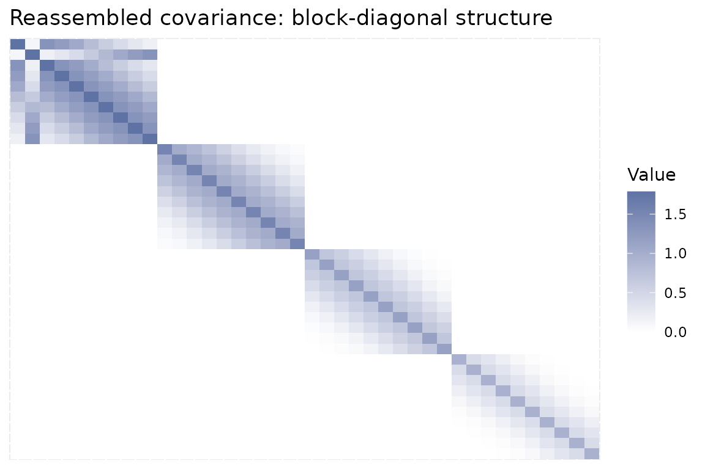

Scaling up with a block-diagonal partition
Source:vignettes/09_block_diagonal.Rmd
09_block_diagonal.Rmd
library(keRnel)
library(BayesOmics)posterior_mean() fits one kernel matrix covering every
feature in a group at once – fine at 40 features, expensive well before
a few thousand. fit_block_posterior() splits the features
into independent blocks first and fits/inverts each block separately,
trading a bit of cross-block correlation for a much smaller matrix per
fit.
Partition and fit
partition_by_range() groups features whose
Input falls in the same interval – nearby features stay
correlated within a block, distant ones are (correctly) treated as
unrelated:
set.seed(9)
kern_true <- variance_kernel(variance = 10) * se_kernel(length_scale = 15)
data <- simu_db_kernel(kernel = kern_true, nb_id = 40, nb_group = 2, nb_sample = 8,
diff_group = 0.8, var_sample = 5, range_input = c(0, 200),
integer_input = TRUE, input_grid = TRUE)
kern_template <- variance_kernel(variance = 1) * se_kernel(length_scale = 50) +
white_noise_kernel(noise = 1)
partition <- partition_by_range(n_bins = 4)
fit <- fit_block_posterior(data, partition, kern = kern_template, pooled = TRUE,
prior_mean = mean(data$Output), prior_cov = 1)
fit$blocks
#> [1] "range_1" "range_2" "range_3" "range_4"kern is an unfitted template here:
fit_kernel() is run once per block rather than once for the
whole dataset.
Each block is a normal posterior_mean() result
fit$block_results[[b]] is exactly what
posterior_mean() would have returned on that block alone –
every existing function (group_diff(),
compute_group_diff(), …) works on it unchanged:
sapply(fit$blocks, function(b) group_diff(fit$block_results[[b]])[1, 2])
#> range_1 range_2 range_3 range_4
#> 2.031579 2.157595 1.681634 1.427135Reassembling a full-length result
get_muk_block()/get_sigmak_block()
concatenate the per-block pieces back into one posterior mean vector /
list of block covariances for a group, when you need the full picture
rather than block-by-block:
muk <- get_muk_block(fit, unique(data$Group)[1])
length(muk)
#> [1] 40
sapply(get_sigmak_block(fit, unique(data$Group)[1]), dim)
#> range_1 range_2 range_3 range_4
#> [1,] 10 10 10 10
#> [2,] 10 10 10 10Each block is 10x10 here, never the full 40x40.
Reassembling the blocks side by side also makes the trade-off
visible: the full covariance is block-diagonal, every off-block entry
exactly 0 – cross-block correlation is what’s being given
up in exchange for a much smaller matrix per fit:
sigma_blocks <- get_sigmak_block(fit, unique(data$Group)[1])
full_dim <- sum(sapply(sigma_blocks, nrow))
full_mat <- matrix(0, full_dim, full_dim)
ids_order <- unlist(lapply(sigma_blocks, rownames))
offset <- 0
for (b in sigma_blocks) {
n <- nrow(b)
full_mat[(offset + 1):(offset + n), (offset + 1):(offset + n)] <- b
offset <- offset + n
}
rownames(full_mat) <- ids_order
colnames(full_mat) <- ids_order
mat_df <- as.data.frame(as.table(full_mat))
names(mat_df) <- c("Row", "Col", "Value")
mat_df$Row <- factor(mat_df$Row, levels = ids_order)
mat_df$Col <- factor(mat_df$Col, levels = rev(ids_order))
ggplot2::ggplot(mat_df, ggplot2::aes(Row, Col, fill = Value)) +
ggplot2::geom_tile() +
ggplot2::scale_fill_gradient(low = "white", high = "#5E72A4") +
ggplot2::labs(title = "Reassembled covariance: block-diagonal structure", x = NULL, y = NULL) +
ggplot2::theme(axis.text = ggplot2::element_blank(), axis.ticks = ggplot2::element_blank())
Takeaways
- Passing an unfitted kernel template (not
NULL) fits it independently per block viafit_kernel()– the same object you would use directly withposterior_mean(). - Each block behaves as a standalone
posterior_mean()result: no new metric API to learn, just call the usual functions per block.